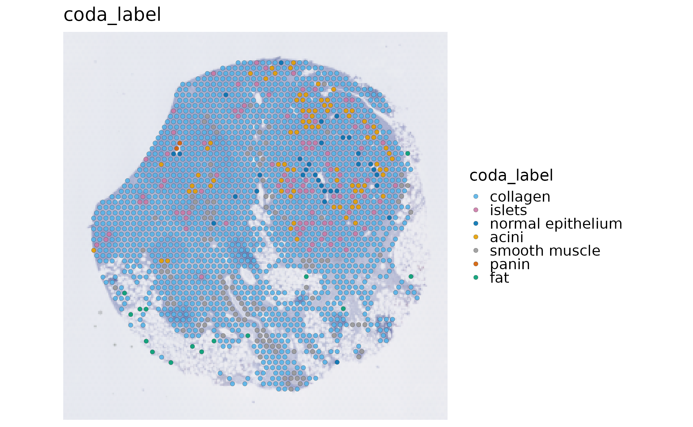
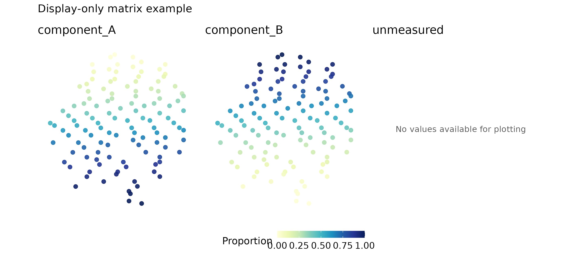
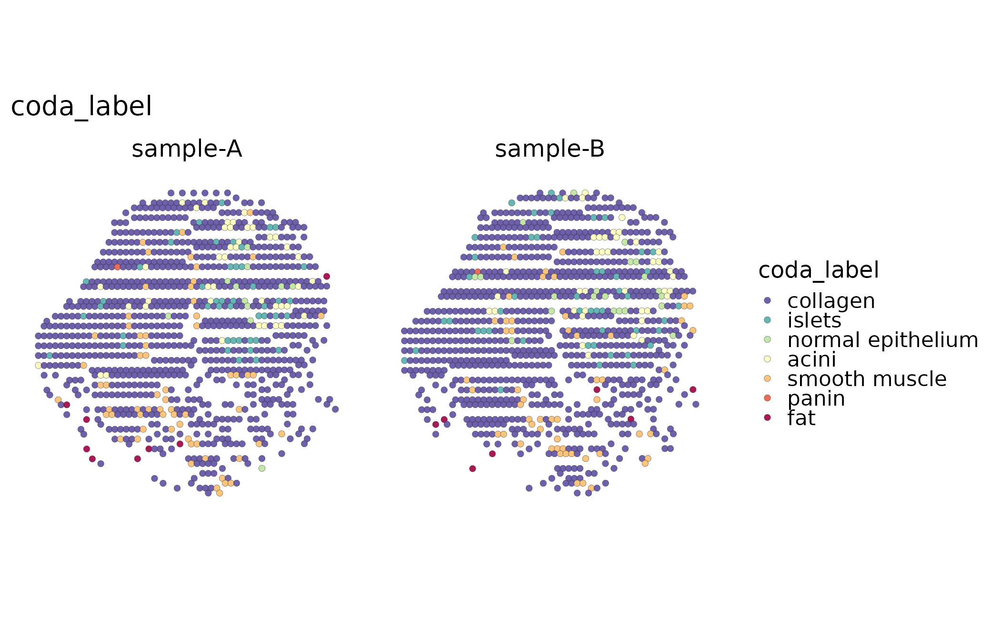

Spatial transcriptomics main workflow
Source:vignettes/spatial-main-workflow.Rmd
spatial-main-workflow.RmdThis is the short, result-first path for a spatial Seurat object:
inspect the input, run a small baseline workflow, inspect the stored
result, and plot it. The bundled visium_human_pancreas_sub
object is a real Visium spot-level dataset used for the executable
examples below. It is not a single-cell measurement: one spot can
contain transcripts from several cells.
Use Spatial imports and standard workflow methods for Visium/Visium HD/Xenium input choices, assays, units, and backend-specific parameters. Use Spatial framework bridges for Seurat, SpatialExperiment, and Giotto conversion boundaries.
Check the input before analysis
library(scop)
data(visium_human_pancreas_sub)
spatial <- visium_human_pancreas_sub
SeuratObject::DefaultAssay(spatial) <- "Spatial"
SeuratObject::Images(spatial)
#> [1] "slice1"
head(spatial@meta.data[, c("x", "y", "coda_label")])
#> x y coda_label
#> TGGTATCGGTCTGTAT-1 3859 662 collagen
#> ATTATCTCGACAGATC-1 3914 662 collagen
#> TGAGATCAAATACTCA-1 3969 662 collagen
#> CTGGTCCTAACTTGGC-1 4024 662 islets
#> ATAGTCTTTGACGTGC-1 4079 662 collagen
#> GGGTGGTCCAGCCTGT-1 4134 662 collagen
raw_coordinates <- SpatialCoordinates(
spatial,
image = "slice1",
space = "raw"
)
raw_coordinates$source
#> $image
#> [1] "slice1"
#>
#> $coord.cols
#> [1] "x" "y"
#>
#> $image_policy
#> [1] "strict"
#>
#> $coordinate_space
#> [1] "raw"
#>
#> $image_class
#> [1] "VisiumV2"
#> attr(,"package")
#> [1] "Seurat"
#>
#> $image_width
#> [1] 600
#>
#> $image_height
#> [1] 340
#>
#> $scale_name
#> [1] "lowres"
#>
#> $scale_factor
#> [1] 0.078125
#>
#> $coordinate_contract_version
#> [1] 3The first checks should answer four questions: which assay contains
the counts, which image is selected, which columns identify the
observations, and whether the coordinate IDs match the expression
columns. SCOP uses raw acquisition coordinates for distance-sensitive
analysis. image.scale is a display choice for a selected
raster; it does not change distances or rewrite Seurat scale
factors.
For Visium, the observations are spots on an acquisition grid. For Xenium or other segmented assays, the observations are cells and the right visualization is [SpatialCellPlot()], not a spot-composition interpretation. A spot label is therefore not automatically a cell type.
Draw an input map
SpatialSpotPlot(
spatial,
group.by = "coda_label",
image = "slice1",
palcolor = c(
acini = "#E69F00",
collagen = "#56B4E9",
fat = "#009E73",
islets = "#CC79A7",
`normal epithelium` = "#0072B2",
panin = "#D55E00",
`smooth muscle` = "#999999"
)
)
The map is an input and metadata check, not a result from a
clustering or deconvolution model. Named palettes are matched to
category names, so changing the row order or subsetting spots does not
silently change the biological color meaning.
SpatialSpotPlot() keeps equal coordinate scaling by
default.
Run the baseline spatial workflow
Keep the first run small and interpretable. This real Visium example performs spot QC and native Moran spatial-variable-feature scoring. It does not run an optional deconvolution or domain backend.
spatial <- RunStandardWorkflow(
spatial,
workflow = "spatial",
assay = "Spatial",
image = "slice1",
coord.cols = c("x", "y"),
do_spot_qc = TRUE,
do_spatial_variable_features = TRUE,
spatial_variable_features_params = list(
method = "moran",
nfeatures = 50,
nperm = 0
),
do_spatial_cluster = FALSE,
do_deconvolution = FALSE,
verbose = FALSE
)
#> ℹ [2026-09-20 23:12:30] Skip `log1p()` because `layer = data` is not "counts"Inspect stored results before plotting
workflow <- spatial@tools$run_standard_spatial_workflow
workflow$status
#> [1] "completed"
workflow$stages[, c("stage", "requested", "status", "actual_method", "reason")]
#> stage requested status actual_method
#> 1 quality_control TRUE completed RunSpotQC
#> 2 spatial_variable_features TRUE completed RunSpatialVariableFeatures
#> 3 spatial_clustering FALSE skipped <NA>
#> 4 deconvolution FALSE skipped <NA>
#> reason
#> 1 <NA>
#> 2 <NA>
#> 3 not requested
#> 4 not requested
spatial@tools$SpatialVariableFeatures$summary
#> $n_features
#> [1] 2000
#>
#> $top_features
#> [1] "FBP1" "CELA3A" "PNLIP" "SPP1" "CLPS" "CTRC"
#> [7] "PRSS1" "PLA2G1B" "CTRB1" "GCG" "CEL" "CPB1"
#> [13] "CPA2" "SPINK1" "TTR" "CFTR" "CPA1" "KRT8"
#> [19] "ELF3" "SFRP2" "SLC4A4" "ANXA4" "PNLIPRP1" "LCN2"
#> [25] "MMP7" "KRT18" "SYCN" "MUSTN1" "DEFB1" "TSPAN8"
#> [31] "IGFBP5" "PDIA2" "FN1" "KRT7" "EPCAM" "MYL9"
#> [37] "ATP1B1" "JCHAIN" "GATM" "HOMER2" "CITED4" "PMEPA1"
#> [43] "SST" "GPX2" "TAGLN" "FXYD2" "NR5A2" "CRP"
#> [49] "GCNT3" "SERPINA5"
#>
#> $top_feature_summary
#> feature rank score
#> 1 FBP1 1 0.6565080
#> 2 CELA3A 2 0.6094565
#> 3 PNLIP 3 0.6072718
#> 4 SPP1 4 0.5923706
#> 5 CLPS 5 0.5917626
#> 6 CTRC 6 0.5826625
#> 7 PRSS1 7 0.5811954
#> 8 PLA2G1B 8 0.5746198
#> 9 CTRB1 9 0.5745952
#> 10 GCG 10 0.5732244
#> 11 CEL 11 0.5684299
#> 12 CPB1 12 0.5656297
#> 13 CPA2 13 0.5635837
#> 14 SPINK1 14 0.5550198
#> 15 TTR 15 0.5512296
#> 16 CFTR 16 0.5332586
#> 17 CPA1 17 0.5212444
#> 18 KRT8 18 0.5093506
#> 19 ELF3 19 0.4804406
#> 20 SFRP2 20 0.4799576
head(spatial@tools$SpatialVariableFeatures$summary$top_features)
#> [1] "FBP1" "CELA3A" "PNLIP" "SPP1" "CLPS" "CTRC"The stage table is the execution receipt. completed,
skipped, and failed are different states; an
unavailable optional backend is not relabelled as a successful result. A
spatially variable feature is a candidate spatial pattern, not
automatically a domain marker or a cell-type marker.
Plot QC and spatial features
SpatialSpotPlot(spatial, group.by = "SpotQC", image = "slice1")
SpatialVariableFeaturePlot(
spatial,
plot_type = "summary",
nfeatures = 4
)
SpatialSpotPlot(
spatial,
features = head(spatial@tools$SpatialVariableFeatures$summary$top_features, 2),
assay = "Spatial",
layer = "counts",
image = "slice1"
)
combine = FALSE returns named plots for independent
editing, including long-format point maps and dominant deconvolution
maps. Long-format plot.data accepts explicit cutoffs and
quantiles; its default range remains the full data range. Plotting reads
stored results or the explicitly selected assay/layer; it does not rerun
QC or spatial-feature detection. A saved Seurat object can be reloaded
and plotted again as long as the stored result and the selected spatial
context remain complete.
Proportion and empty-panel display
Composition plots require a spot-by-cell-type result. The following compact fixture deliberately creates a display-only matrix from real spot IDs so that the layout contract is executable without installing an optional deconvolution backend. It is not a biological inference and must not be reported as one.
display_object <- spatial[, unique(round(seq(1, ncol(spatial), length.out = 120)))]
#> Warning: Not validating Centroids objects
#> Not validating Centroids objects
#> Warning: Not validating FOV objects
#> Not validating FOV objects
#> Not validating FOV objects
#> Not validating FOV objects
#> Not validating FOV objects
#> Not validating FOV objects
#> Warning: Not validating Seurat objects
fraction <- seq(0, 1, length.out = ncol(display_object))
demo_proportions <- cbind(component_A = fraction, component_B = 1 - fraction,
unmeasured = NA_real_)
rownames(demo_proportions) <- colnames(display_object)
display_object@tools$display_only_proportions <- list(proportions = demo_proportions)
SpatialDeconvolutionPlot(
display_object,
tool_name = "display_only_proportions",
combine = TRUE,
overlay_image = FALSE,
ncol = 3,
palette = "YlGnBu",
legend.position = "bottom",
legend.direction = "horizontal"
) + patchwork::plot_annotation(title = "Display-only matrix example")
In a real analysis, replace that fixture with the stored output of
RunRCTD(), RunSPOTlight(), or another
supported producer and keep the producer’s provenance. The common matrix
renderer keeps numeric values and colors identical between
combine = TRUE and combine = FALSE;
all-missing panels remain informative empty panels. q05 abundance from
cell2location is a different quantity from a proportion and is not
forced onto a 0–1 scale.
For a proportion pie, use the explicit numeric matrix with
SpatialSpotPlot(..., plot_type = "pie") when
scatterpie is installed. Pie fractions are relative to the
selected components; they are not cell counts.
Multiple samples and optional backends
split.by is useful for a quick faceted view of
metadata:
spatial$display_sample <- rep(c("sample-A", "sample-B"), length.out = ncol(spatial))
SpatialSpotPlot(
spatial,
group.by = "coda_label",
split.by = "display_sample",
overlay_image = FALSE
)
This facet does not register images or create a cross-sample
inference. A multi-image analysis must select one covering image per
sample; ambiguous coverage errors instead of dropping a sample. The
platform page contains the RunSpatialIntegration() example
with an explicit named image map and labels the PRECAST dependency as an
execution condition.
Domain clustering, deconvolution, neighborhood, communication, and framework conversion are separate questions. Add one only after the baseline map and stage receipt are sensible, then report the observation unit, assay, image, coordinate columns, method, and result status.
Save, reload, and redraw
Save the analysis object, not only its figure. This example uses a temporary file; choose a persistent filename when keeping your own results. The real analysis object is separate from the display-only fixture above.
result_file <- tempfile(fileext = ".rds")
saveRDS(spatial, result_file)
reloaded <- readRDS(result_file)
stopifnot(identical(colnames(reloaded), colnames(spatial)))
stopifnot(identical(reloaded@tools$SpatialVariableFeatures,
spatial@tools$SpatialVariableFeatures))
SpatialSpotPlot(reloaded, group.by = "SpotQC", image = "slice1")
unlink(result_file)The redraw does not rerun QC, normalization, or spatial-feature detection.
What to report
At minimum record:
- the source object and platform, assay/layer, selected image, coordinate columns, and coordinate space;
- the number of spots or cells retained at each stage;
- QC status and the selected spatial-variable-feature method;
- domain or composition methods only when they were actually run;
- backend availability and failed/skipped stages, rather than presenting unexecuted code as a result.